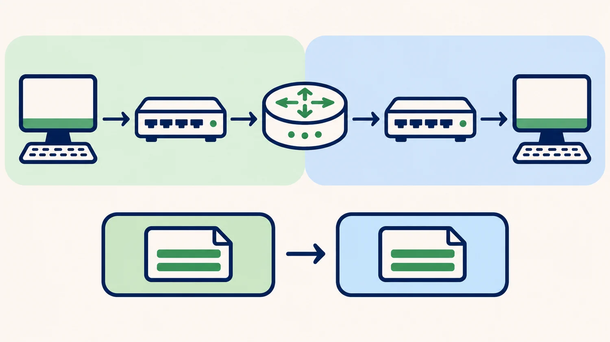

计算机网络课堂复习
从网络结构与传输算题学到以太网、IP 地址和 RIP。可按图片日期回顾课堂，也可沿知识点顺序复习和自测。
按学习顺序复习
知识点讲解视频（1） · 待发布
视频待发布，发布后可在此播放。
- 网络组成、拓扑结构与交换方式 1:31
网络组成、拓扑结构与交换方式
理解计算机网络如何连接设备，以及信息通过网络传送的基本方式。
- 网络由主机、网络设备和通信链路等组成，多个网络可以通过路由设备互连。
- 网络边缘主要包含运行应用程序的终端；网络核心主要承担数据转发任务。
- 常见拓扑有星形、总线形、环形、树形和网状，应根据连接关系识别，而不是只看设备数量。
- 电路交换通常先建立通路并预留通信资源；报文交换将完整报文存储后再转发；分组交换将较长数据拆分为分组逐跳传送。
- 分组交换既可采用数据报方式，也可采用虚电路方式，并不必然意味着无连接。
易错点 不要把分组交换理解成传输前必须建立专用通路，也不要认为使用分组后，各分组一定经过相同路径。
自测 某网络将较长的数据拆成多个较小的数据单元，各节点收到完整单元后再转发。这主要体现了哪一种交换方式？
分组交换。判断步骤：①数据被拆分为较小单元；②中间节点能够逐个处理和转发；③不要求为整个通信过程独占一条物理通路。
课堂图号 09-07#03–07、09-14#01–07
知识点讲解视频（1） · 待发布
视频待发布，发布后可在此播放。
- 网络分层模型、协议与封装 1:37
网络分层模型、协议与封装
建立网络分层概念，能够判断协议、服务、数据单元和封装过程之间的关系。
- OSI参考模型自下而上为物理层、数据链路层、网络层、传输层、会话层、表示层和应用层。
- 教学中常用五层模型，将OSI上面的三个层次合并为应用层；TCP/IP也常使用四层表示。
- 发送端逐层添加必要的控制信息，接收端逐层解析；不同层使用不同的数据单元名称。
- 协议规定通信双方如何交换信息，传统教材常概括为语法、语义和同步三个要素。
- 同层实体遵守协议，下层向上层提供服务；服务访问点SAP用于识别服务的使用位置。
易错点 协议约定对等层如何通信，服务则由下层提供给上层。经过路由器时，出接口会按出站链路重新封装。
自测 一台主机发送IP数据报，数据报先经过交换机，再由路由器转发到另一局域网。经过路由器后，链路层帧是否必须保持原样？
不必保持原样。路由器接收并处理入站链路层帧，根据IP数据报进行转发判断，再按照出站链路的要求重新封装。若不涉及NAT，通常不会修改原始源IP和目的IP。
课堂图号 09-14#08–19
知识点讲解视频（1） · 待发布
视频待发布，发布后可在此播放。
- 传输速率、带宽与网络时延 1:37
传输速率、带宽与网络时延
掌握网络性能的常用单位和四类时延，能够独立完成基础计算。
- 网络传输速率常用bit/s、kbit/s、Mbit/s表示；1B等于8bit，计算前应统一单位。
- 频域中的带宽通常以Hz表示，网络接口或链路的传输能力通常以bit/s描述。
- 发送时延等于待发送比特数除以链路发送速率。
- 传播时延等于传播距离除以信号在介质中的传播速度。
- 总时延还可能包括处理时延和排队时延；多跳场景需要根据存储转发、流水线及题目给定条件分别计算。
易错点 提高链路传输速率主要减少发送时延，不会直接改变指定介质中的信号传播速度。遇到MB与MiB，须按题设确定采用十进制还是二进制换算。
自测 某链路速率为3Mbit/s，需要发送12000bit数据，传播距离600km，传播速度为2×10^5km/s。忽略处理与排队时延，总时延是多少？
①发送时延=12000÷3000000=0.004s=4ms。②传播时延=600÷200000=0.003s=3ms。③总时延=4+3=7ms。答案为7ms。
课堂图号 09-14#25–31、09-16#01–05
知识点讲解视频（1） · 待发布
视频待发布，发布后可在此播放。
- 码元速率、奈奎斯特定理与香农容量 2:04
码元速率、奈奎斯特定理与香农容量
能够区分波特率、比特率、频率带宽与信道容量，正确计算理想信道的理论上限。
- 码元速率表示每秒传送的码元数量，单位为Baud；若每码元有N种可区分状态，则每码元可携带log₂N bit信息。
- 对于理想无噪声、带宽为W的基带低通信道，奈奎斯特给出的最高码元速率为2W Baud，对应最高比特率为2Wlog₂N bit/s。
- 香农公式C=Wlog₂(1+S/N)描述规定条件下有噪信道的理论容量，其中W用Hz，S/N使用线性功率比。
- 信噪比dB=10log₁₀(S/N)。若给出30dB，应先换算为线性比1000，不能直接把30放进香农公式。
- 当题目同时给出有限码元状态数和噪声条件时，理论可达速率不能超过两种条件分别给出的上限；误码率BER等于错误比特数除以传输比特总数。
易错点 C=2W仅是理想二进制码元、每码元携带1bit时的比特率结果，不能对任意N直接使用。奈奎斯特的理想极限也不等于实际系统一定达到的速率。
自测 理想无噪声基带低通信道的带宽为3kHz，每个码元有16种离散状态。最高码元速率和理论最高比特率分别是多少？
①最高码元速率=2×3000=6000Baud。②每码元信息量=log₂16=4bit。③最高比特率=6000×4=24000bit/s=24kbit/s。若另外存在噪声，还应计算香农容量并检查限制。
课堂图号 09-16#11–22、09-24#01–08
知识点讲解视频（1） · 待发布
视频待发布，发布后可在此播放。
- 数字调制与PCM编码 1:19
数字调制与PCM编码
理解数字信息怎样通过信号参数变化进行表示，以及模拟信号数字化的基本流程。
- ASK通过改变载波幅度区分信号状态。
- FSK通过不同频率表示不同状态，PSK通过相位变化区分状态。
- QAM利用正交分量表示不同状态，通常体现为幅度与相位的组合变化。
- PCM的基本处理顺序是采样、量化、编码。
- 采样得到离散时间的样本，量化将样本映射到有限幅值级别，编码再将量化结果表示为数字码字。
易错点 调制和信源编码不是同一个过程。PCM把模拟信息转成数字表示，ASK、FSK、PSK等主要描述信号如何承载数字信息。
自测 某通信系统先以固定时间间隔获取模拟语音样本，再将样本幅值归入有限等级，最后用二进制表示等级编号。这三个过程分别是什么？
依次为采样、量化、编码。先取得离散时间样本，再确定有限幅值级别，最后形成数字码字。
课堂图号 09-24#09–13
知识点讲解视频（1） · 待发布
视频待发布，发布后可在此播放。
- 线路编码、同步传输与传输介质 1:37
线路编码、同步传输与传输介质
学会识别常见数字线路波形、异步字符结构和物理传输介质。
- NRZ编码不强制每位内部产生跳变，长时间连续相同状态可能增加时钟同步难度。
- 曼彻斯特编码在每个码元的中间存在跳变，具体跳变方向表示0还是1，需要服从题目约定。
- 差分曼彻斯特编码也具有位中间跳变，信息通过位边界是否跳变来表示；课堂采用0在位开始跳变、1不跳变的约定。
- 异步字符传输通常包含起始位、数据位和停止位；是否存在校验位以及每字符总位数必须由题目确定。
- 双绞线、同轴电缆和光纤具有不同物理特性；单模光纤适合长距离传输，多模光纤通常受到模间色散限制。
易错点 不能脱离编码约定和初始电平直接判断整张波形图。100m等传输距离也不能推广为所有双绞线或所有网络技术的统一上限。
自测 根据课堂采用的差分曼彻斯特约定，某个码元表示0。它在位开始处是否应发生跳变？位中间是否还要跳变？
位开始处应发生跳变，位中间也需要跳变。作图时先确定前一个码元结束电平，再画当前码元边界和中间位置的跳变。
知识点讲解视频（1） · 待发布
视频待发布，发布后可在此播放。
- 频分、时分、统计时分与波分复用 1:35
频分、时分、统计时分与波分复用
掌握多用户共享信道的基本方式，能够处理简单带宽分配题。
- FDM将可用频带分成不同频率范围，让多个信号同时占用不同频带。
- 同步TDM按预定时隙轮流分配传输机会，即使部分用户暂时没有数据，也可能保留其时隙。
- STDM依据活动用户的实际需求分配时隙，在用户不活跃时可以减少固定时隙造成的浪费。
- WDM让不同光波长承载不同信道；CDM通过可区分的码片序列复用同一传输资源。
- 计算某用户可获得的速率前，应确认总链路速率、用户数、是否固定平均分配以及是否忽略控制开销。
易错点 统计时分复用能更灵活地利用空闲资源，不代表所有用户可以同时获得整个物理链路的满速率。
自测 一条9600bit/s的链路由4个用户使用，采用同步TDM，每人固定得到相同份额并忽略额外开销。每人速率是多少？如果改为STDM且只有一个用户活跃，其理想峰值是多少？
同步TDM：9600÷4=2400bit/s。STDM：只有一个活跃用户且忽略额外开销时，可利用整条9600bit/s链路。后一结果不意味着四人能同时各获得9600bit/s。
课堂图号 09-26#11–12、09-26#29–32
知识点讲解视频（1） · 待发布
视频待发布，发布后可在此播放。
- CDMA正交码片与归一化内积 1:42
CDMA正交码片与归一化内积
能够依据码片序列完成信号叠加、相关计算和用户数据判决。
- 按课堂约定，码片可用+1和-1表示，二进制符号与正负码片之间的映射应事先确定。
- 采用发1传原码片向量、发0传相反向量的教学模型时，未发送信号可表示为零向量。
- 各用户发送向量在信道中叠加，接收端得到的是合成向量。
- 用接收向量与指定用户码片向量计算归一化内积，在理想正交模型中可得到+1、-1或0，分别判断发送1、发送0或未发送。
- 两个正交码片向量的归一化内积为0，这是在合成信号中区分用户的重要条件。
易错点 计算时不能直接统计两个码片序列的相同位数量。需要先转为正负向量、逐项相乘、求和，再除以码片长度。
自测 设A用户码片为(+1,+1,-1,-1)，B用户码片为(+1,-1,+1,-1)，接收到的合成向量为(0,2,-2,0)。按课堂判决约定，两名用户分别发送了什么？
①A归一化内积=(0+2+2+0)÷4=+1，所以A发送1。②B归一化内积=(0-2-2+0)÷4=-1，所以B发送0。③结果也可由合成向量=A向量-B向量验证。
课堂图号 09-26#13–28
知识点讲解视频（1） · 待发布
视频待发布，发布后可在此播放。
- 奇偶校验、CRC与检错 1:44
奇偶校验、CRC与检错
掌握基础检错方法，重点学会CRC生成多项式、模2除法和接收端判别。
- 偶校验使数据与校验位中的1总数为偶数，奇校验使其为奇数；简单奇偶校验不能发现所有差错。
- CRC生成多项式可写成二进制位串。若生成多项式阶数为r，发送端先在原数据后补r个0。
- 对补零后的数据按生成位串进行模2除法，减法运算采用异或，不产生普通算术借位。
- 将r位余数附加在原数据后形成发送比特串；接收端使用相同生成位串进行校验。
- 校验余数非零意味着检测到差错；余数为零只说明本次CRC检查没有发现差错，不能保证数据绝对正确。
易错点 CRC是检错机制，不自动包含确认、纠错和重传，也不能把模2除法当作普通十进制除法。
自测 对数据10110010采用生成位串1101计算CRC。需要补几个0？余数是多少？最终发送的比特串是什么？
①生成位串长度4，因此最高阶数r=3。②补3个0，得到10110010000。③执行模2除法，所得3位余数为001。④将001附在原数据后，发送10110010001。
课堂图号 10-10#01–12、10-15#01–02
知识点讲解视频（1） · 待发布
视频待发布，发布后可在此播放。
- PPP帧结构与透明传输 1:24
PPP帧结构与透明传输
理解PPP帧的基本字段，以及异步字节填充和同步零比特填充。
- 典型PPP帧包含起始标志、地址、控制、协议、信息、FCS和结束标志等部分。
- PPP中的FCS用于差错检测，不能将其与可靠交付混为一谈。
- 在课堂所述异步转义方式中，数据字节7E需要转换为7D 5E，数据字节7D需要转换为7D 5D。
- 接收端按转义规则恢复原来的数据字节，从而避免把数据内容误认成帧界限。
- 采用比特填充的同步PPP链路中，发送端遇到连续5个1，就插入一个0；接收端再删除相应填充位。
易错点 字节填充与比特填充是不同的透明传输处理方式，不能将7D转义规则直接用于比特填充题。
自测 某同步PPP帧的数据部分出现连续5个1。发送端为了实现透明传输，下一步应插入哪个比特？
插入0。发送端在连续5个1之后增加一个填充0，接收端按照相同规则识别并去除该填充位。
课堂图号 10-10#13–18
知识点讲解视频（1） · 待发布
视频待发布，发布后可在此播放。
- 以太网帧、CSMA/CD与最小帧长 1:49
以太网帧、CSMA/CD与最小帧长
理解传统共享以太网的碰撞检测机制及标准以太网帧的基础字段。
- 传统共享式半双工以太网通过CSMA/CD协调介质访问：发送前监听、发送时检测冲突、冲突后停止并按退避机制重试。
- 争用期与最坏情况下碰撞信号往返传播时间有关，影响经典共享以太网的最小帧长。
- 经典10Mbit/s以太网中，51.2微秒对应512bit，即64B，是以太网MAC帧的基本最小长度。
- 普通无VLAN标签的Ethernet II帧具有目的MAC、源MAC、类型、数据或填充、FCS等字段，典型MAC帧长度为64至1518B。
- 以太网常见1500B的MTU指三层载荷上限，不是完整MAC帧长度；前导码与帧开始定界符也不计入上述MAC帧长度。
易错点 不能把CSMA/CD当作现代全双工交换式以太网必须执行的机制，也不能把MTU=1500B理解成整个以太网帧只能有1500B。
自测 在经典10Mbit/s共享以太网中，若争用期为51.2微秒，则这一时长对应多少比特、多少字节？
①10000000bit/s×0.0000512s=512bit。②512÷8=64B。因此对应64字节的最小MAC帧长度。
课堂图号 10-15#04–08、10-15#09–14
知识点讲解视频（1） · 待发布
视频待发布，发布后可在此播放。
- 集线器、交换机自学习与VLAN 1:40
集线器、交换机自学习与VLAN
掌握交换机转发帧的基本规则，并区分碰撞域与广播域。
- 集线器主要工作在物理层，传统共享式连接中的设备共享介质访问资源。
- 交换机能够按端口独立处理帧，在全双工连接下通常不存在传统共享介质碰撞；但端到端吞吐量仍会受到链路和端口竞争限制。
- 交换机通过进入端口的帧学习源MAC地址及其端口映射。
- 对于已知目的MAC，若出口与入口不同则定向转发，若位于同一端口则通常过滤；未知单播需要在相应VLAN内向其他允许的端口泛洪。
- VLAN将二层广播范围划分为不同广播域，跨VLAN通信一般需要三层设备或三层转发功能。
易错点 交换机学习的是源MAC地址，而不是仅根据目的MAC学习。一个VLAN可以跨多台交换机，但不同VLAN不能仅靠普通二层交换直接互通。
自测 某交换机从端口1收到一个帧，源MAC为AA，目的MAC为BB，转发表中尚无BB的信息。它应如何学习和处理？
①记录AA对应端口1。②由于目的BB未知，在所属VLAN中向端口1之外的相关端口泛洪。③以后收到来自BB的帧时，可根据其源MAC学习BB所在端口。
知识点讲解视频（1） · 待发布
视频待发布，发布后可在此播放。
- IPv4地址结构、历史分类与特殊地址 1:47
IPv4地址结构、历史分类与特殊地址
掌握IPv4地址的基本形式、常见私有地址范围及历史分类规则。
- IPv4地址长度为32bit，通常用四组点分十进制数表示，每组对应8bit。
- 历史有类编址中，A、B、C类的默认网络前缀分别对应/8、/16、/24；现代CIDR网络必须以实际前缀长度为准。
- 常见IPv4私有地址范围包括10.0.0.0/8、172.16.0.0/12和192.168.0.0/16。
- 127.0.0.0/8属于环回地址范围，127.0.0.1是常见的本机回环测试地址。
- 255.255.255.255是受限广播地址；某子网主机位全为1形成的定向广播地址是另一概念。
易错点 不能看到172开头就认定为私有地址，只有第二段为16至31且满足对应前缀的地址才落在172.16.0.0/12中。
自测 下列地址中，哪个属于IPv4私有地址：172.15.8.1、172.30.8.1、172.32.8.1？
172.30.8.1。因为172.16.0.0/12对应第二段16至31，30处于该范围；15和32都不在该范围。
课堂图号 10-29#04–08、11-07#02–07
知识点讲解视频（1） · 待发布
视频待发布，发布后可在此播放。
- 子网掩码、CIDR与地址块计算 1:57
子网掩码、CIDR与地址块计算
学会根据IP地址和前缀求网络地址、广播地址、地址总数以及普通主机可用范围。
- CIDR使用斜杠后的数字表示前缀长度，例如/20意味着前20bit属于网络前缀。
- 网络地址可通过IP地址与子网掩码逐位进行AND运算得到。
- 对于一般IPv4广播型子网，主机位全为0代表网络地址，主机位全为1代表该子网的定向广播地址。
- 若普通子网保留网络地址和广播地址，h位主机部分的常规可用主机数为2^h−2。
- 计算地址范围时，先确定前缀、变化的字节和块大小，再确定块起点及终点。
易错点 2^h−2适用于通常需要保留网络地址与广播地址的IPv4子网，不能不加条件地用于/31和/32。也不能只凭IP地址历史类别忽略题目给出的掩码。
自测 主机地址172.20.70.9/20所在子网的网络地址、定向广播地址和普通可用主机数分别是多少？
①/20对应255.255.240.0，第三段块大小为16。②70落在64至79范围。③网络地址172.20.64.0。④广播地址172.20.79.255。⑤主机位12bit，普通可用主机数=2^12−2=4094。
知识点讲解视频（1） · 待发布
视频待发布，发布后可在此播放。
- 定长子网划分、VLSM与点对点网络 1:49
定长子网划分、VLSM与点对点网络
掌握等长划分、按需求分配地址和/31特殊规则。
- 定长子网划分使用统一的新前缀，每个子网具有相同规模，计算时需检查子网边界。
- VLSM允许按不同主机数量分配不同大小的连续地址块，通常先处理主机数量要求最大的网络。
- 常规IPv4子网容量应同时满足主机数要求及必要的网络地址、广播地址保留。
- 一些历史教材按2^n−2计算可分配子网数量，排除全0和全1子网；现代CIDR通常允许使用这些子网，遇到旧题应明确题设。
- 按照RFC 3021，适用的IPv4点对点链路可以使用/31，使两个地址都作为端点地址使用；/32表示单个地址的前缀。
易错点 不要把/31按普通2^1−2计算成0个可用地址，也不要把旧题的全0、全1子网限制当作所有现代网络的通用规定。
自测 点对点链路使用192.0.2.4/31，链路两端可分别使用哪两个IPv4地址？
192.0.2.4和192.0.2.5。因为/31只留下1位地址位，整个地址块恰有两个地址；在符合RFC 3021的点对点链路上，两者都可作为端点地址。
课堂图号 11-07#09–19、11-14#10–14
知识点讲解视频（1） · 待发布
视频待发布，发布后可在此播放。
- 路由聚合与最长前缀匹配 1:40
路由聚合与最长前缀匹配
理解路由汇总为什么可以减少表项，以及路由器怎样选择匹配的转发规则。
- 路由聚合将连续、适当对齐且能够用共同前缀表示的地址块归纳成一个较大的地址块。
- 聚合时先写出地址的二进制前缀，找到共同的连续高位，再确定汇总地址和前缀长度。
- 使用汇总路由时应注意是否覆盖额外地址范围，避免把不属于原规划的目的地错误引向同一路径。
- 路由查表先判断目的地址与哪些前缀匹配，再选择前缀长度最长的匹配项。
- 默认路由0.0.0.0/0能够匹配任何IPv4目的地址，但只有不存在更具体匹配项时才会作为相应的匹配结果。
易错点 聚合是压缩路由描述，最长前缀匹配是选择具体转发项。不能误以为较大的网络地址块具有更高转发优先级。
自测 路由表包含202.196.0.0/20经A、202.196.8.0/24经B、默认路由经C。目的地址202.196.8.20应选择哪个出口？
选择B。①目的地址匹配/20。②同时匹配更具体的/24。③默认路由也可以匹配，但前缀长度0最短。④按最长前缀匹配选择/24对应的B。
课堂图号 11-14#05–09、11-21#06–11
知识点讲解视频（1） · 待发布
视频待发布，发布后可在此播放。
- IPv4数据报分片与片偏移 2:05
IPv4数据报分片与片偏移
熟练计算IPv4分片的数据长度、总长度、MF标志和片偏移。
- IPv4数据报总长度包括IP首部和数据部分；无选项的基本首部通常为20B。
- 需要分片时，先用原总长度减去首部长度，求得原始数据量，再计算每片可承载的数据。
- 非最后一个分片的数据长度必须是8B的整数倍，常用计算式为floor((MTU−首部长度)/8)×8。
- 片偏移表示分片数据在原始IP数据部分中的起始位置，以8B为单位，不把IP首部计入偏移。
- MF=1表示后面还有分片，MF=0表示最后一片；DF=1表示禁止分片，超过出站MTU时不能通过分片继续传送。
易错点 不要把MTU减去首部后的数据大小直接当成一定合法的非末片长度；还必须考虑8B对齐。也不能将最后一个分片的数据长度误写成分片总长度。
自测 原IPv4数据报总长4000B，首部20B，出站链路MTU为1500B，DF=0。需要多少片？各片数据长度、总长度、片偏移和MF是多少？
①原数据=4000−20=3980B。②每个非末片最多承载1480B，且1480能被8整除。③数据分为1480、1480、1020B，共3片。④总长度分别1500、1500、1040B。⑤片偏移分别0、1480÷8=185、2960÷8=370。⑥MF分别为1、1、0。
课堂图号 10-29#01–03、11-07#01
知识点讲解视频（1） · 待发布
视频待发布，发布后可在此播放。
- IPv6地址、基本首部与转发特点 1:39
IPv6地址、基本首部与转发特点
掌握IPv6地址表示方法、基本首部结构及其与IPv4的关键区别。
- IPv6地址长度为128bit，通常写成8组十六进制数，每组16bit。
- 每组开头的0可以省略，一段连续的全0组可以使用双冒号压缩；同一个地址表示中双冒号只能使用一次。
- IPv6基本首部固定40B，包括版本、通信量类、流标号、有效载荷长度、下一个首部、跳数限制、源地址和目的地址。
- IPv6区分单播、多播和任播，没有IPv4那样的广播地址机制。
- IPv6路由器不在转发途中对数据包进行普通分片；需要时由源端处理分片，Hop Limit在逐跳转发中减少。
易错点 IPv6首部40B不等于所有IPv6数据包只能包含40B首部信息；扩展首部可另外存在。双冒号也不能在同一个地址中重复使用。
自测 将IPv6地址FF05:0:0:0:0:0:0:B3压缩，并说明IPv6基本首部长度。
①中间有连续6组全0。②使用一次双冒号替代，结果为FF05::B3。③IPv6基本首部固定40B，不包括额外扩展首部。
课堂图号 11-14#15–17、11-21#01–04
知识点讲解视频（1） · 待发布
视频待发布，发布后可在此播放。
- ARP与跨局域网逐跳转发 1:36
ARP与跨局域网逐跳转发
理解IP地址与MAC地址的职责，能够判断ARP请求针对哪一个设备。

- ARP主要用于IPv4环境中，将本地链路上下一跳的IPv4地址解析为链路层MAC地址。
- 发送方判断目标是否在本地链路可直接到达的IP子网；若是，通常解析目标主机的MAC地址。
- 若目的主机位于其他网络，发送方通常先解析默认网关在本地链路接口上的MAC地址。
- 在常见广播型以太网中，ARP请求通常通过广播发送，ARP应答通常以单播返回。
- 经过路由器转发时，新链路上使用新的MAC帧封装；在没有NAT等特殊处理的情况下，IP源地址和目的地址通常保持不变。
易错点 ARP并不是跨互联网一次性查询最终目标主机的MAC地址。跨网段发送时，当前链路需要的是下一跳设备的MAC地址。
自测 主机 A 要向另一个局域网的主机 B 发送 IPv4 数据报。A 配置了默认网关，但 ARP 缓存没有相应条目。A 要先查询谁的 MAC 地址？
通常是默认网关对应本地接口的MAC地址。A先将IP数据报封装成发往网关MAC地址的帧；路由器处理IP数据报后，再在下一链路使用新的MAC帧封装。
课堂图号 11-21#05、11-21#22–26
知识点讲解视频（1） · 待发布
视频待发布，发布后可在此播放。
- 路由表、下一跳与默认路由 1:31
路由表、下一跳与默认路由
能够根据目的IP地址、网络前缀和转发表选择正确的下一跳。
- 路由表通常记录目的网络前缀及转发所需的信息，例如出口接口或下一跳地址。
- 目的IP地址需要与路由表前缀逐项比较，而不是只比较部分十进制数字。
- 在存在多个可匹配前缀时，应优先采用最长前缀匹配规则。
- 直连网络可以直接指定出口接口；远端网络可能需要将数据报交给下一跳路由器。
- 如果没有更具体的匹配路由且配置了默认路由，可使用默认出口；没有可用匹配项则不能凭空确定下一跳。
易错点 不能只根据目的IP的前两段相同就认为属于同一网络，也不能假设任何未匹配地址都会被默认路由转发，前提是默认路由确实存在且可用。
自测 路由器有128.96.40.0/25经R2和默认路由经R4两条规则。目的地址128.96.40.151应交给谁？
交给R4。/25对应第三段40不变、第四段0至127的地址范围；151超出该范围，因此不匹配R2规则。题设存在默认路由，所以选择R4。
课堂图号 11-21#06–11
知识点讲解视频（1） · 待发布
视频待发布，发布后可在此播放。
- RIP距离向量与路由表更新 1:57
RIP距离向量与路由表更新
能够执行RIP的邻居通告处理，重点判断新增、同邻居更新、较短路径替换和不可达路由。
- RIP是距离向量路由协议，主要使用跳数作为距离度量；1至15为有效可达度量，16表示不可达。
- 收到相邻路由器通告的距离后，计算经该邻居到目的网络的候选距离，通常需要在通告跳数上加1，并将结果上限限制为16。
- 如果原路由表没有该目的网络，且收到的候选路由有效，可以增加新表项。
- 如果已有路由的下一跳就是发送通告的邻居，应根据该邻居的新距离更新，即使距离增大。
- 如果原下一跳不是本次通告的邻居，较短的候选距离可替换原路由；课堂简化题中等长候选通常保留原项，实际协议还涉及计时器及其他更新规则。
易错点 不能只在跳数减小时才更新路由。同一原下一跳报告路径变差时，也需要处理新度量；更不能把16跳当成仍然可达。
自测 B的原表包括N2(距离2，下一跳C)、N6(距离8，下一跳F)、N8(距离4，下一跳E)。邻居C通告N2距离4、N6距离4、N8距离3。按课堂简化RIP规则，三项更新为什么？
①先全部加1，候选距离依次为N2=5、N6=5、N8=4。②N2原下一跳为C，因此更新为(5,C)，虽然距离增大。③N6原下一跳F，候选5小于原8，更新为(5,C)。④N8原下一跳E，候选4等于原4，按课堂规则保留(4,E)。
知识点讲解视频（1） · 待发布
视频待发布，发布后可在此播放。
- ICMP差错报告与网络诊断 1:20
ICMP差错报告与网络诊断
认识ICMP在IP网络中的辅助作用，区分控制报文和应用层数据传输。
- ICMP用于传递与IP网络处理有关的控制、差错和诊断信息。
- 常见ICMP消息包括Echo Request、Echo Reply、目的不可达和超时等。
- IPv4的ICMP报文封装在IP数据报中，不属于TCP或UDP承载的应用数据。
- ping常利用ICMP回显请求和应答测试网络可达性，但没有应答不一定意味着主机完全不可达。
易错点 ICMP不能保证每次错误都产生报告，网络设备也可能限制ICMP消息。不能仅凭ping失败就断定物理链路已经断开。
自测 某IPv4数据报在路由过程中TTL递减为0，路由器通常使用哪类ICMP消息告知发送方？
通常使用ICMP超时消息，即Time Exceeded。路由器丢弃TTL到期的数据报，并在适用条件下向源端报告超时。
课堂图号 11-21#22–24、11-21#27
课堂资料与日期索引
首批开课图片归档于北京时间 9 月 7 日，对应美西时间 9 月 6 日晚。14 个有图日期包括复习附件，未作为完整课次统计。
- 8 张#01–02课程准备；#03–05网络组成、互联网边缘与核心；#06网络拓扑；#07三种交换方式；#08课后任务。可核对8张。
- 31 张#01–07网络概念与交换；#08–19分层模型、协议、封装和服务；#20–24复习题；#25–31速率、带宽与时延。可核对31张。
- 22 张#01–05四类时延；#07–10通信系统与信号；#11–22码元、波特率、奈奎斯特和香农定理。#06是课后作业（讲义 P31 第 29 题）。可核对22张。
- 32 张#01–08容量计算、信噪比与误码率；#09–13调制和PCM；#14–25线路编码；#26–28传输方式；#29–32传输介质及作业。可核对32张。
- 32 张#01–07曼彻斯特编码练习；#08–10网络介质；#11–12时分复用；#13–28 CDMA码片计算；#29–32复用技术比较。可核对32张。
- 18 张#01–03奇偶校验；#04–12 CRC、多项式与检错；#13–18 PPP帧结构、字节转义和零比特填充。可核对18张。
- 1 张#01复习作业题号汇总。仅能确认复习索引，不能据此认定当天讲授了新的知识点。可核对1张。
- 16 张#01–02 CRC复习；#03局域网；#04–06 CSMA/CD；#07–08以太网帧；#09–14物理连接与MAC；#15–16集线器。可核对16张。
- 19 张#01–05集线器与交换机带宽；#06–10交换机自学习；#11–13碰撞域；#14–19 VLAN、广播域和网络设备。可核对19张。
- 8 张#01–03 IPv4分片、标志位与偏移；#04–08 IPv4地址、历史分类、私有地址和环回地址。可核对8张。
- 22 张#01–02分片与地址复习；#03–07掩码与按位与；#08复习结构；#09–19子网规划；#20–22 CIDR。可核对22张。
- 1 张#01课程知识结构复习图。仅作为已学内容的整理证据，不推定新增授课知识。可核对1张。
- 17 张#01–04地址规划；#05–09路由聚合与匹配；#10–14子网划分、VLSM和点对点链路；#15–17 IPv6。可核对17张。
- 27 张#01–04 IPv6；#05及#25–26 ARP；#06–11路由查表；#12–21 RIP；#22–24路由器；#27 ICMP。可核对27张。
图号按北京时间的日期和当日图片序号标注，如 11-21#05 对应 11 月 21 日第 5 张。知识点由课堂证据归纳，练习为复习用。